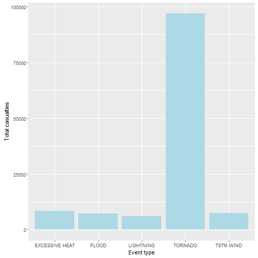
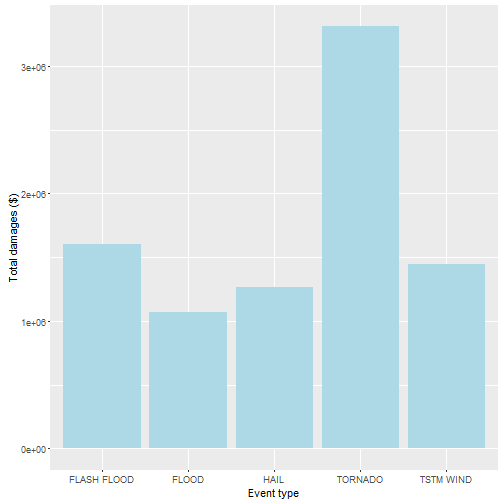

Storms and other severe weather events can cause both public health and economic problems for communities and municipalities. Many severe events can result in fatalities, injuries, and property damage, and preventing such outcomes to the extent possible is a key concern. This project involves exploring the U.S. National Oceanic and Atmospheric Administration's (NOAA) storm database. This database tracks characteristics of major storms and weather events in the United States, including when and where they occur, as well as estimates of any fatalities, injuries, and property damage.
Installing and loading the required packages:
## Installing package into 'C:/Users/Elmer/Documents/R/win-library/3.3'
## (as 'lib' is unspecified)
## Warning: package 'plyr' is in use and will not be installed
## Installing package into 'C:/Users/Elmer/Documents/R/win-library/3.3'
## (as 'lib' is unspecified)
## Warning: package 'dplyr' is in use and will not be installed
## Installing package into 'C:/Users/Elmer/Documents/R/win-library/3.3'
## (as 'lib' is unspecified)
## Warning: package 'ggplot2' is in use and will not be installed
## Installing package into 'C:/Users/Elmer/Documents/R/win-library/3.3'
## (as 'lib' is unspecified)
## Warning: package 'knitr' is in use and will not be installed
Getting the data:
#download.file("https://d396qusza40orc.cloudfront.net/repdata/data/StormData.csv.bz2", "StormData.csv.bz2")
stormData <- read.csv("StormData.csv.bz2")
head(stormData)
## STATE__ BGN_DATE BGN_TIME TIME_ZONE COUNTY COUNTYNAME STATE
## 1 1 4/18/1950 0:00:00 0130 CST 97 MOBILE AL
## 2 1 4/18/1950 0:00:00 0145 CST 3 BALDWIN AL
## 3 1 2/20/1951 0:00:00 1600 CST 57 FAYETTE AL
## 4 1 6/8/1951 0:00:00 0900 CST 89 MADISON AL
## 5 1 11/15/1951 0:00:00 1500 CST 43 CULLMAN AL
## 6 1 11/15/1951 0:00:00 2000 CST 77 LAUDERDALE AL
## EVTYPE BGN_RANGE BGN_AZI BGN_LOCATI END_DATE END_TIME COUNTY_END
## 1 TORNADO 0 0
## 2 TORNADO 0 0
## 3 TORNADO 0 0
## 4 TORNADO 0 0
## 5 TORNADO 0 0
## 6 TORNADO 0 0
## COUNTYENDN END_RANGE END_AZI END_LOCATI LENGTH WIDTH F MAG FATALITIES
## 1 NA 0 14.0 100 3 0 0
## 2 NA 0 2.0 150 2 0 0
## 3 NA 0 0.1 123 2 0 0
## 4 NA 0 0.0 100 2 0 0
## 5 NA 0 0.0 150 2 0 0
## 6 NA 0 1.5 177 2 0 0
## INJURIES PROPDMG PROPDMGEXP CROPDMG CROPDMGEXP WFO STATEOFFIC ZONENAMES
## 1 15 25.0 K 0
## 2 0 2.5 K 0
## 3 2 25.0 K 0
## 4 2 2.5 K 0
## 5 2 2.5 K 0
## 6 6 2.5 K 0
## LATITUDE LONGITUDE LATITUDE_E LONGITUDE_ REMARKS REFNUM
## 1 3040 8812 3051 8806 1
## 2 3042 8755 0 0 2
## 3 3340 8742 0 0 3
## 4 3458 8626 0 0 4
## 5 3412 8642 0 0 5
## 6 3450 8748 0 0 6
First, in order to calculate the most harmful events, the raw data from the stormData dataset is summarized by its two main observations: fatalities and injuries.
casualties <- ddply(stormData, .(EVTYPE), summarize, fatalities = sum(FATALITIES), injuries = sum(INJURIES))
Then, both observations were added and the subset was ordered desdending.
casualties$totalCasualties <- casualties$fatalities + casualties$injuries
casualties <- casualties[with(casualties, order( - totalCasualties)),][1:5,]
ggplot(casualties, aes(x = EVTYPE, y = totalCasualties)) + geom_bar(stat = "identity", fill = "light blue") + xlab("Event type") + ylab("Total casualties")

##Across the United States, which types of events have the greatest economic consequences? First, in order to calculate the events with greatest economic consequences, the raw data from the stormData dataset is summarized by its two main observations: property and crop damages.
damages <- ddply(stormData, .(EVTYPE), summarize, property = sum(PROPDMG), crop = sum(CROPDMG))
Then, both observations were added and the subset was ordered desdending.
damages$totalDamages <- damages$property + damages$crop
damages <- damages[with(damages, order( - totalDamages)),][1:5,]
ggplot(damages, aes(x = EVTYPE, y = totalDamages)) + geom_bar(stat = "identity", fill = "light blue") + xlab("Event type") + ylab("Total damages ($)")
